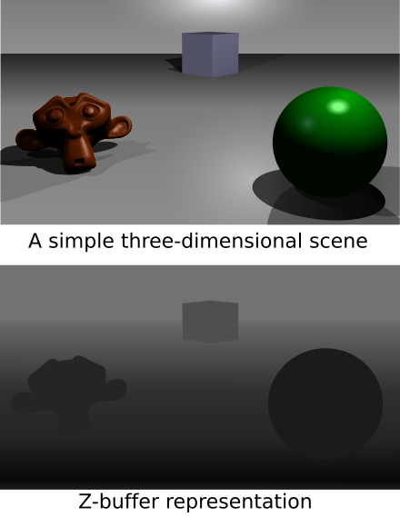
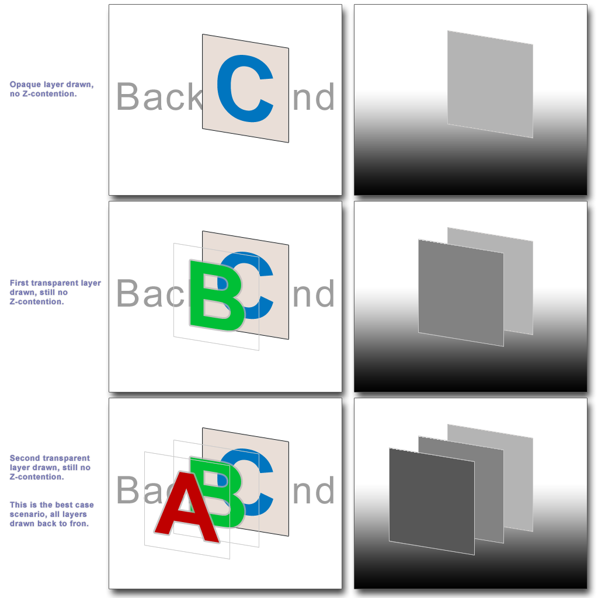

Depth test + Blending：誰擋誰、怎麼混色
- 知道 Depth test（Z-buffer）：近的擋遠的，GPU 自動處理不透明遮擋
- 知道透明物體的兩個規矩：關深度寫入 + 從後往前畫
- 知道 Blending 換 factor 就換效果（Alpha / Additive）
先看：近的為什麼會擋住遠的

Fragment Shader 算完顏色，還沒真的寫進畫面。最後這個 Output Merging 階段， GPU 會先做Depth test（深度測試）。
Depth test：比誰近
每個片段都有深度（離鏡頭多遠）。要寫進畫面前，先跟 Depth Buffer（Z-buffer）比： 比較近才畫上去，比較遠就丟掉（被前面的擋住了）。 不透明物體的遮擋關係，就這樣自動搞定，你不用管畫的順序。
Blending：透明是「混色」不是「覆蓋」
不透明像素直接覆蓋。但透明像素要跟後面已經畫好的顏色混合，這叫 Blending。最常見的 Alpha 混合：
最終色 = 來源色 × α + 背景色 × (1 − α) // α = 透明度 0~1
透明的兩個坑（最常見的透明 bug 根因）：
1. 透明物體要關掉深度寫入，否則會擋住後面該透出來的東西。
2. 要從後往前排序畫，因為混色公式不可交換（先後不同、結果不同）。
1. 透明物體要關掉深度寫入，否則會擋住後面該透出來的東西。
2. 要從後往前排序畫，因為混色公式不可交換（先後不同、結果不同）。
換一組 Blend Factor 就換一種效果：Alpha Blending（一般透明）、 Additive（發光，越疊越亮，火焰/粒子常用）。
快速確認
透明物體疊起來顏色怪怪的，最可能是什麼沒做對？
「近的擋住遠的」是靠哪個 buffer？（中文或英文）
從 Mesh 進去，到像素寫進畫面。現在看到渲染程式碼，你應該能說出它落在哪一階段了。
接下來可以往哪走
- 進階主題（之後可加課）：NormalMap（用貼圖假造凹凸）、Shadow（陰影）。
- 路 2 — 跟著程式碼走：打開一支真實的 effect / shader，逐段對照這 9 課。
- 路 3 — 跟著 bug 走：全黑、貼圖爆掉、z-fighting、透明怪、物件消失 —— 每個症狀對應這條管線的一站。
原始資料 / 延伸閱讀
- Blending 改寫自 遊戲繪圖_05_Blending.md；Depth 取自 遊戲繪圖_01 的 Per-Fragment 段（
遊戲繪圖_10_Depth.md目前尚未撰寫）。 - 推薦閱讀：LearnOpenGL — Depth Testing ／ Blending
想開始「路 2」或「路 3」，或把某一課挖深？跟你的教學 agent（/teach）說一聲。